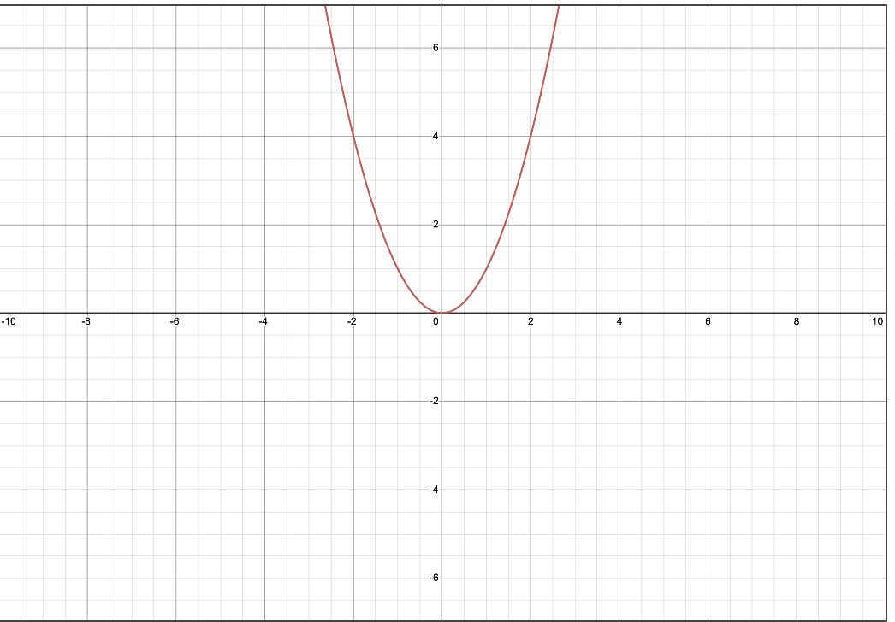
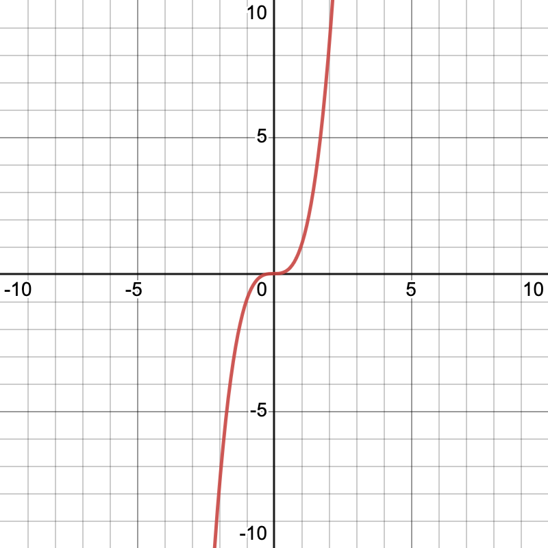
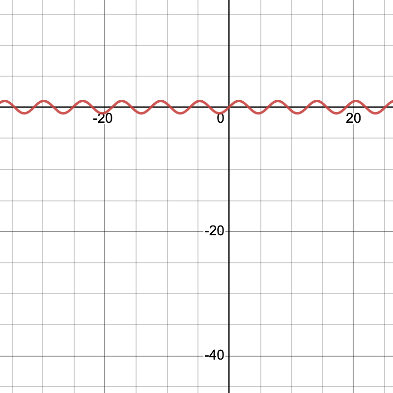

Prompt:
which function is shown on this graph?

The function could be y=x
2
.

Appears to represent a cubic function.

Sinusoidal function, most likely a sine or cosine wave
Performance in identifying function class from graph: very good.
GPT-4 correctly identified the function type for all of these functions.
Home